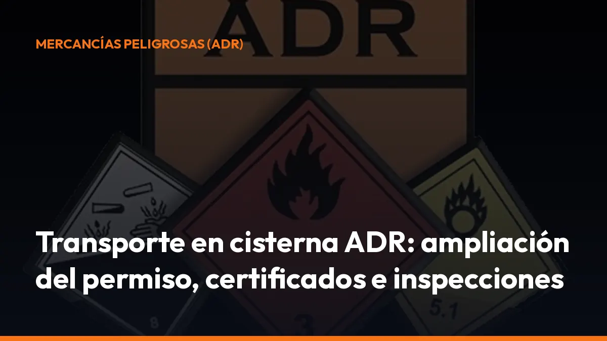

Transporte en cisterna ADR: ampliación del permiso, certificados e inspecciones

Un error en cualquiera de estos puntos puede provocar la inmovilización del vehículo, retrasos en la entrega y problemas durante un control.
En este artículo encontrarás lo esencial sobre el transporte en cisterna ADR: tipos de cisterna, ampliación del permiso, Módulo 2, certificados, inspecciones, lavado y documentación obligatoria.
Consulta siempre la versión vigente del ADR y la normativa aplicable al producto concreto antes de iniciar un transporte.
¿Qué es una cisterna ADR y qué equipos están incluidos?
El ADR regula el transporte internacional de mercancías peligrosas por carretera y también se aplica al transporte interior en España, con las particularidades previstas en el Real Decreto 97/2014.
Cuando se habla de transporte en cisterna ADR, no se hace referencia únicamente a un depósito fijo instalado en un camión. El marco normativo incluye diferentes equipos:
- Cisterna fija: depósito unido permanentemente al vehículo. Es la configuración habitual de muchos camiones cisterna.
- Cisterna desmontable: depósito que puede separarse del vehículo portador y utilizarse con distintos vehículos, siempre que el conjunto cumpla las exigencias aplicables.
- Contenedor-cisterna: unidad de transporte que puede trasladarse entre distintos medios y que debe cumplir, con carácter general, las disposiciones del capítulo 6.8 del ADR.
- Cisterna portátil: equipo diseñado para poder manipularse y transportarse en diferentes medios. Su referencia técnica principal se encuentra en el capítulo 6.7 del ADR.
- Vehículo batería o CGEM: conjunto de elementos conectados para transportar determinadas mercancías peligrosas, con requisitos específicos.
La diferencia es importante porque no todas las unidades tienen exactamente los mismos certificados ni el mismo régimen de aprobación.
Antes de aceptar un porte, comprueba qué equipo vas a utilizar, qué mercancía permite transportar y qué documentación debe acompañarlo. Así evitas descubrir el problema cuando ya estás en la planta de carga.
Necesitas la ampliación ADR Cisternas para conducir legalmente
El permiso ADR básico permite transportar mercancías peligrosas en vehículos que no sean cisterna, con las limitaciones previstas para explosivos y radiactivos.
Si vas a conducir un vehículo cisterna, una cisterna desmontable, un contenedor-cisterna o un vehículo batería, necesitas la ampliación ADR Cisternas.
La DGT explica aquí el procedimiento oficial para obtener la ampliación.
Cómo se tramita la ampliación
El proceso se divide en pasos concretos:
1. Ten el ADR básico en vigor. La ampliación no sustituye al permiso básico. Primero necesitas una autorización ADR básica válida.
2. Matricúlate en un centro concertado. Debes realizar el curso específico de ampliación ADR Cisternas y obtener el certificado de aprovechamiento.
3. Completa la formación teórica y práctica. El programa incluye tipos de cisterna, válvulas, dispositivos de seguridad, comportamiento de la carga, señalización, estacionamiento y actuación ante escapes o derrames.
4. Solicita el examen en la DGT. Puede gestionarlo el propio centro de formación. Cada solicitud de examen da derecho a dos convocatorias, con un máximo de seis meses entre ellas.
5. Supera la prueba y recibe la autorización. Después de aprobar, debes llevar la autorización ADR junto con tu permiso de conducir en vigor. La DGT publica una tasa de examen. El coste y la duración del curso dependen del centro de formación elegido.
No salgas a ruta pensando que el ADR básico es suficiente. Revisa hoy la autorización de cada conductor que transporte mercancías peligrosas en cisterna.
ADR Cisternas y Módulo 2: no son exactamente lo mismo
El Módulo 2 de transporte en cisternas y contenedores-cisterna forma parte de la formación profesional relacionada con el transporte de mercancías y la capacitación de conductores.
Su contenido aborda cuestiones prácticas como:
- Características y riesgos de las cisternas.
- Carga, descarga y operaciones de conexión.
- Control del llenado.
- Estabilidad y comportamiento de la carga líquida.
- Seguridad en ruta.
- Actuación ante averías, derrames o emergencias.
- Requisitos documentales y operativos.
El Módulo 2 aporta formación específica y ayuda a trabajar con mayor seguridad. Sin embargo, debes distinguirlo de la ampliación ADR Cisternas de la DGT.
- ADR Cisternas: autorización administrativa específica para conducir vehículos que transporten mercancías peligrosas en cisternas.
- Módulo 2: formación profesional especializada sobre el transporte en cisternas y contenedorescisterna.
Según el puesto, el tipo de transporte y los requisitos de la empresa, pueden exigirse ambos. No confundas un curso de formación con la autorización ADR que habilita al conductor.
Certificados e inspecciones obligatorias para una cisterna ADR
La cisterna debe mantenerse en condiciones técnicas adecuadas durante toda su vida útil. El artículo 10 del RD 97/2014 regula aspectos relacionados con el diseño, la certificación, la construcción y las inspecciones de cisternas, vehículos batería, CGEM y otros vehículos ADR.
Inspección inicial
La inspección inicial se realiza antes de poner la cisterna en servicio. Comprueba, entre otros aspectos:
- Conformidad con el tipo aprobado.
- Estado del depósito y sus elementos de fijación.
- Examen interior y exterior.
- Prueba de presión hidráulica cuando corresponda.
- Prueba de estanqueidad.
- Funcionamiento de válvulas y equipos de seguridad.
- Adecuación del vehículo portador.
Si el resultado es favorable, se genera la documentación técnica correspondiente y puede tramitarse el certificado de aprobación que corresponda.
Inspecciones periódicas
Las cisternas, contenedores-cisterna y equipos relacionados deben someterse a inspecciones periódicas conforme a las periodicidades y pruebas previstas en el ADR y en la normativa complementaria.
El contenido puede incluir:
- Inspección visual interior y exterior.
- Medición de espesores.
- Comprobación de soldaduras y posibles daños.
- Prueba de estanqueidad.
- Prueba de presión, cuando proceda.
- Verificación de válvulas de seguridad.
- Revisión de conexiones, cierres y equipos.
- Comprobación del vehículo portador y sus sistemas ADR.
La periodicidad no es idéntica para todos los equipos ni para todas las mercancías. Consulta la placa de características, el expediente de la cisterna y el certificado vigente antes de cargar.
Inspección extraordinaria
Si la cisterna ha sufrido un accidente, una reparación, una modificación o un daño que pueda afectar a la seguridad del depósito, necesitas una inspección extraordinaria.
No basta con reparar visualmente una abolladura o sustituir una pieza. Debes verificar si el daño afecta a la seguridad del equipo y documentar la intervención mediante un organismo de control autorizado.
El certificado de aprobación: qué acredita y cuándo debes llevarlo
El certificado de aprobación acredita que determinados vehículos y unidades de transporte cumplen las condiciones técnicas exigidas para transportar mercancías peligrosas.
El artículo 16 del RD 97/2014 prevé la expedición de un certificado para cada vehículo-cisterna, vehículo batería, vehículo portador o tractor de determinados tipos ADR, como FL, OX y AT, además de otros vehículos incluidos en el régimen correspondiente.
El cargador puede solicitarte este certificado antes de iniciar la carga. Si no lo presentas o está caducado, la operación puede detenerse.
Importante: los contenedores-cisterna y las cisternas portátiles pueden tener un régimen documental diferente. El artículo 19 del RD 97/2014 exige documentación técnica y de inspección, pero no siempre implica la emisión de un certificado ADR del vehículo como ocurre con otras unidades.
Revisa siempre el equipo concreto. No guardes un único certificado genérico para toda la flota.
Certificado de lavado: cuándo lo necesitas
Antes de cargar una nueva mercancía, el cargador debe comprobar que la cisterna es compatible y está en condiciones adecuadas.
El artículo 42 del RD 97/2014 establece que, cuando proceda, debe presentarse un certificado de lavado interior o de desgasificación y despresurización. El documento debe acreditar que la cisterna está vacía y limpia.
El certificado de lavado no será necesario cuando:
- La cisterna haya descargado una mercancía.
- Vaya a cargar la misma mercancía.
- O vaya a cargar otra mercancía compatible.
Después de descargar, la situación documental también es importante. Si no se ha realizado la limpieza reglamentaria, el vehículo debe continuar con la documentación que refleje la última mercancía transportada o con la carta de porte en vacío que corresponda.
No des por hecho que “vacío” significa “limpio”. Una cisterna vacía pero sin lavar puede seguir teniendo restos, vapores o riesgos asociados al producto anterior.
Documentación que debes revisar antes de salir
El artículo 35 del RD 97/2014 exige que la documentación acompañe al transporte y esté disponible para la tripulación y los servicios de control.
Antes de iniciar la ruta, comprueba esta lista:
- Carta de porte ADR: debe identificar correctamente la mercancía, su designación oficial, número ONU, clase, grupo de embalaje cuando proceda, cantidad y demás datos exigibles.
- Instrucciones escritas: deben estar a bordo en un idioma que la tripulación entienda. Incluyen las medidas que deben adoptarse ante accidente o emergencia.
- Autorización ADR del conductor: verifica que incluye la ampliación de cisternas y que permanece vigente.
- Certificado de aprobación del vehículo: llévalo cuando el ADR lo exija para esa unidad.
- Certificados de inspección de la cisterna: conserva la documentación que acredita las inspecciones iniciales, periódicas o extraordinarias.
- Certificado de lavado: incorpóralo cuando la carga, la compatibilidad o la operación lo requieran.
- Ficha de datos de seguridad: facilita la información técnica sobre los riesgos del producto y las medidas de manipulación. Debe estar disponible cuando proceda según la mercancía y el procedimiento de la empresa.
- Documentación de la mercancía y del cliente: comprueba que coincide con lo indicado en la carta de porte.
La documentación debe ser coherente. No sirve tener una carta de porte correcta si la matrícula, el producto, la cantidad o el certificado de la cisterna no coinciden.
¿Qué ocurre si falta un documento?
Durante una inspección, los agentes o el personal de control pueden comprobar:
- La autorización del conductor.
- El certificado de aprobación.
- La inspección de la cisterna.
- El certificado de lavado.
- La carta de porte.
- Las instrucciones escritas.
- La señalización y los paneles naranja.
- Los equipos de emergencia.
- El estado de válvulas, bocas de carga y elementos de seguridad.
Si falta un documento, está caducado o contiene datos incorrectos, puedes enfrentarte a una parada operativa o inmovilización del vehículo hasta solucionar la incidencia.
Además, el cargador no debe iniciar la carga si no se cumplen los controles reglamentarios de documentación, equipamiento y condiciones previas. La falta de preparación puede hacerte perder horas antes de abandonar la planta.
Digitaliza tus documentos y sal a ruta con más control
El transporte en cisterna ADR exige consultar muchos documentos en distintos momentos: antes de cargar, durante el control y después de descargar.
Con Mi Carga puedes crear y gestionar documentación digital para el transporte desde el móvil, directamente desde la cabina o la oficina.
Tú decides qué información necesitas tener localizada. Nosotros te ayudamos a reducir papeles, evitar búsquedas y mantener una trazabilidad clara de tus portes.
- Desde el móvil: genera y consulta documentos estés donde estés.
- Sin complicaciones: trabaja desde la cabina, la oficina o la planta de carga.
- Trazabilidad: conserva el histórico de tus portes.
- Modo sin conexión: continúa trabajando aunque pierdas cobertura.
- Portes ilimitados: utiliza la aplicación sin límite en los planes disponibles.
Para un autónomo, puedes activar tu suscripción desde 10 € al mes más IVA. Incluye 10 portes de prueba que no caducan y puedes cancelar cuando quieras. Si gestionas una flota o necesitas varias cuentas, solicita un presupuesto cerrado. También puedes escribirnos por WhatsApp al 744 716 449.
Revisa tu ADR, comprueba tus certificados y prepara la documentación antes de encender el motor. En transporte en cisterna ADR, salir preparado es la forma más rápida de evitar una parada.
Fuentes normativas
- Real Decreto 97/2014 en el BOE
- Ampliaciones ADR de la DGT
- Renovación de autorizaciones ADR
- Mi Carga
Genera tus 10 primeros documentos gratis con Mi Carga
DeCA, carta de porte y ADR, en PDF, con QR y archivo automático en la nube.
Empezar con 10 documentos gratisArtículo informativo. Consulta siempre el caso concreto de tu operación. ¿Dudas? Escríbenos.